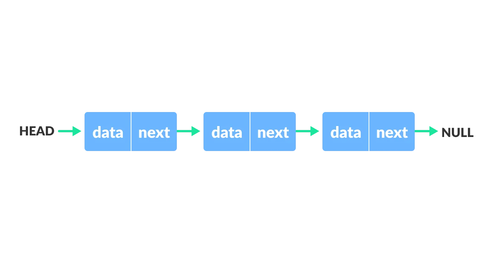

Source: GeeksforGeeks
- A linked list is a list that is dynamic in size, and is efficent at adding and removing elements.
- A linked list is made out of "nodes". Each node contains data, and a link, or reference, to the next node.
-
Linked lists can be singly-linked, doubly-linked, or circular.
- Singly-linked lists only have a reference from each node to the next.
- Doubly-linked lists have nodes with references to the previous and next node.
- Circular linked lists are singly-linked lists, with the difference being that the "last" node has its next node linked to the first.